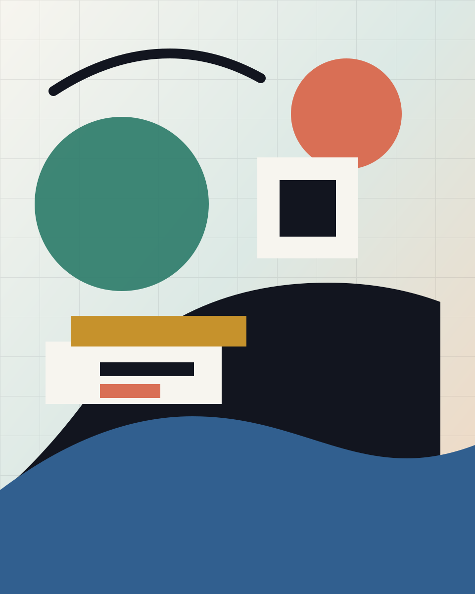

Kisisel Site
gokoverse.com icin hizli, sade ve genisletilebilir bir baslangic.
Kisisel web sitesi
Teknoloji, tasarim, uretim ve merak ettigim seyler icin kurdugum kisisel alan.

Hakkimda
Burasini zamanla yaptigim projeleri, ogrendiklerimi, denemelerimi ve paylasmak istedigim notlari topladigim bir merkez haline getirecegim.
Ilk surum sade tutuldu: hizli acilir, mobilde rahat okunur ve Vercel uzerinden kolayca yayinlanir.
Projeler
gokoverse.com icin hizli, sade ve genisletilebilir bir baslangic.
Ogrendigim konular, kisa fikirler ve ileride buyuyecek yazilar.
Araclar, prototipler ve internette yasayabilecek kucuk fikirler.
Notlar
Iletisim